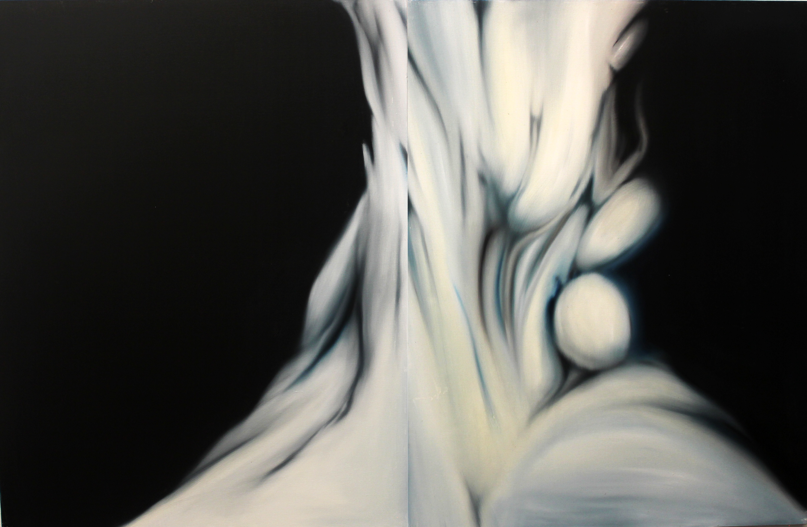

2025
明るい洞窟 (3)
(2)から続く連作であり、本シリーズの現時点での到達点の一つ。青から緑、そして桃色へと移ろう色彩のスペクトルが、深い闇の奥底で脈打つ生命の胎動を思わせる。
絵画の表面から深層へ、そして再び表面へと、鑑賞者の意識を激しく往還させる一枚である。
Series — Depth & Threshold · Light & Darkness
The Cave
慣れた日常に、ふと開いた未知。 描くことによって穿たれる位相、「洞窟」。 すぐ隣にある層への招待状。
《洞窟》とは、断片ともつれから成る複数の世界（系）のうちのひとつ。 世界（系）を単一では無く、並存する宇宙として捉える。
Series Statement
《洞窟》とは、見慣れた日常や生まれ育った風景に穿たれた
「位相」、
知覚領域（層、または領土）です。
私が描く「洞窟」は、物理的な岩の空洞や、遠い秘境の光景ではありません。それは、私たちが日々暮らしている身近な風景や、生まれ育った場所のすぐ隣に存在する層——「隣層」を視覚化するための試みです。
日常の風景に、ふと気が付く（＝位相を穿つ）と、「いと」が顔を覗かせます。キャンバスに描かれる深い奥行きは、現実空間の遠近法を再現するだけではありません。それは見る者の意識を奥へ奥へと引き込み、日常の隣層へと誘うための引力として機能します。
例えば、光のあたる表層から光の届かない深度の境界のグラデーションを探求することで、支持体そのものが未知の知覚領域（層）へつながる「入り口」へと変容します。暗がりへの没入は、かすかな恐怖と同時に、胎内に回帰するような根源的な安堵を呼び覚ますでしょう。
私たちの世界は決して単一ではなく、無数の断片、いとがもつれ合うように並存しています。そのなかのひとつ、つまり「単位世界」＝洞窟の前に立つとき、あなた自身のすぐ隣で息づく
「気配」
を感じていただけるはずです。
Tsuda Shoichi
(2)から続く連作であり、本シリーズの現時点での到達点の一つ。青から緑、そして桃色へと移ろう色彩のスペクトルが、深い闇の奥底で脈打つ生命の胎動を思わせる。
絵画の表面から深層へ、そして再び表面へと、鑑賞者の意識を激しく往還させる一枚である。
「往路」へと連なる2025年の探求を象徴する一枚。かつての「明るい洞窟」から6年の歳月を経て、内なる空間の解釈はより複雑な光の屈折へと深化している。
画面を構成する青の結晶は、静寂の中にある鋭利な緊張感を孕み、視線を深淵へと引きずり込む。

左美都の谷を発ち、善光寺平へと向かう道行きをそのまま画面の流れに変換した横長の連作。冷たい青と緑が支配する画面の左半分は、深い森と渓流に包まれた往路の入り口の気配を留めている。
右へ進むにつれて青は次第に温度を上げ、赤や桃色を帯びた光の塊へと変容していく。これは地理的な移動の記録であると同時に、洞窟の奥（左美都）から光の射す平地（善光寺平）へと抜けていく、シリーズそのものの主題を再演する一枚でもある。

「往路」と対をなす本作は、善光寺平から左美都へと戻る帰路を描く。画面は淡く解けるような桃色と白から始まり、進むにつれて鋭く尖った結晶状の青へと姿を変えていく——光に満ちた場所から、再び洞窟の奥深くへ沈んでいく感覚の反転である。
「往路」が光へ向かう上昇の軌跡だとすれば、「復路」はその逆運動、すなわち根源へと還っていく下降の軌跡だ。二作を並べて見るとき、《洞窟》シリーズが繰り返し描いてきた表層と深層の往還が、一対の絵画として完結する。
三面のキャンバスを連結し、左美都の地に伝わる神話と地質的記憶を一望のもとに描き出した作品。画面を貫く赤の連なりは、地中に眠る伝承の血脈のように、三つの画面をひとつの物語として繋いでいる。
淡いベージュの余白と、内側に押し込められた赤や桃色の塊との対比は、表に語られることのない土地の記憶が、絵画の奥でなお息づいていることを示している。

これまでの連作の集大成として制作された大作。縦5メートル、横6メートルという圧倒的なスケールは、鑑賞者を絵画の前に立たせるのではなく、その内部へと取り込んでしまう。連なる稜線は、もはや遠景としての風景ではなく、身体ごと包み込む洞窟そのものとして立ち現れる。
分割されたパネルの継ぎ目は、地殻のひび割れのような痕跡として残され、巨大な画面に呼吸するような揺らぎを与えている。光が差し込む白い塊と、奥に沈む青や赤の層が、表層と深層の往還という《洞窟》シリーズの主題を、これまでにない密度で結晶化させている。
「覚知」という、知覚がふいに像を結ぶ瞬間を主題とした作品。垂直に伸びる白い形態の連なりは、暗がりの中で何かに気づいた刹那の身体の緊張を思わせる。
赤の滴りが縦に走ることで、認識が生まれる以前の混沌と、像として結晶化した後の静けさが、ひとつの画面の中で同時に提示されている。

夜の終わりに差し込む最初の光を捉えた一枚。暗がりの底から浮かび上がる黄や紅の帯は、洞窟の内側から外界の気配を初めて感じ取る瞬間のようでもある。
「夕焼け」が内へと沈んでいく光であるのに対し、「朝焼け」はそこから再び表層へと立ち上がろうとする光であり、シリーズの中で対をなす一枚として位置づけられる。
洞窟の奥から外界を望むように、画面の彼方に水平線が引かれる。内なる暗がりと外の光が、ひとつの地平で接する瞬間を捉えた作品である。
視線は深層から表層へ、表層から深層へと往復し続け、絵画そのものが境界=入り口として機能し始める。

光が消えゆく瞬間の空を、洞窟の入り口から見上げるような構図で描いた一枚。暮れていく光は、内側の暗がりへと誘う最後の境界線として機能する。

飛翔と落下、上昇と下降が同居する不安定な空間構成。重力から解き放たれたかのような筆致が、洞窟内部の不確かな方向感覚を呼び起こす。
小品ながら、画面の中心に据えられた暗部が深い奥行きを生み出す。タイトルを持たないことで、鑑賞者自身の記憶や経験が空洞を満たす余地として残されている。

「ここまで」を意味する隠れたタイトルは、洞窟探索の一時的な到達点を示すと同時に、絵画制作そのものの現在地をも暗示する。重ねられた絵の具の層が、辿ってきた時間の堆積を物語る。
暗部と明部のコントラストは、外側の光が届く限界線=洞窟の「現在地」を描き出している。
音楽用語「リトルネッロ（反復句）」を借りたタイトルが示す通り、明るい洞窟のモチーフが画面の中で繰り返し回帰する。光の反復は、暗闇の中で確かな道しるべとなる。

二面のキャンバスを連ねることで、垂直に落下し続ける水の運動と時間の持続を表現している。流れ落ちる水音は、洞窟の闇の奥へと響き渡る境界の合図でもある。
《洞窟》シリーズの起点となる作品の一つ。「門」というモチーフは、内と外、光と闇を分かつ閾そのものを直接的に主題化している。

シリーズの出発点となった作品。洞窟という空間的主題への最初のアプローチであり、以降の連作を貫く「内なる空間」への関心の原点がここに記されている。
Contact
展覧会・作品購入・取材・コラボレーション等、
お気軽にご連絡ください。